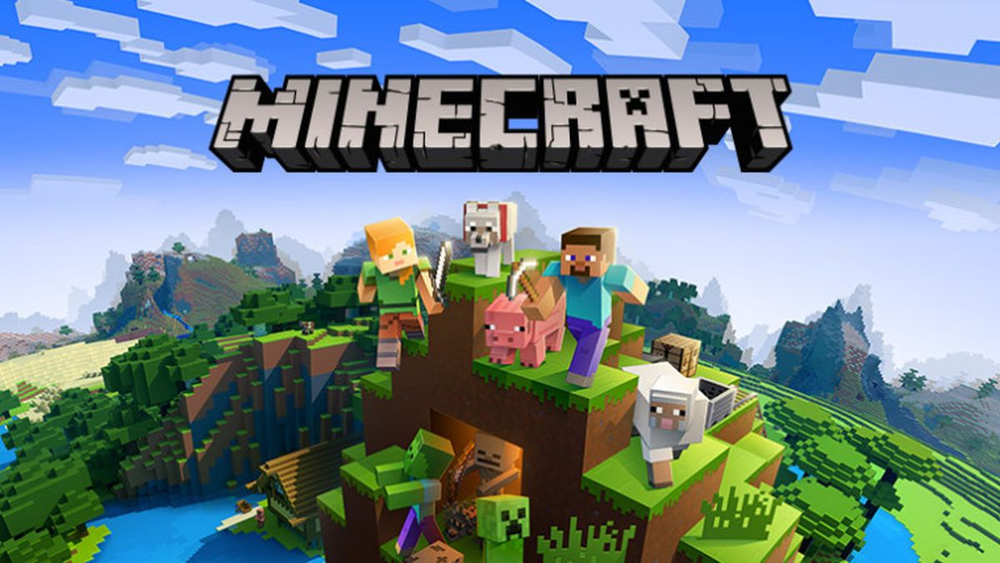
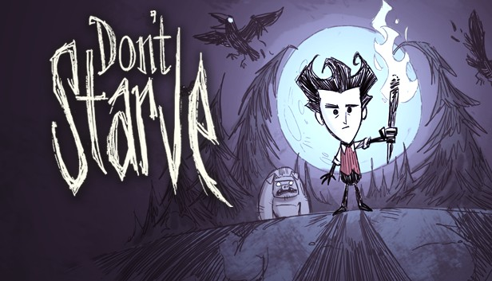

GryPC.PL
GryPC.PL
Survival
Komputerowa gra survivalowa to podgatunek komputerowej gry akcji, którego rozgrywkę najczęściej cechuje otwarty świat, a zadaniem gracza jest przetrwanie.
Gracz rozpoczyna grę w nieprzyjaznym świecie i z minimalnymi zasobami pozwalającymi na przetrwanie. Jego zadaniem jest szukanie i zbieranie kolejnych zasobów, narzędzi czy broni, ale również zaspokajanie potrzeb takich jak jedzenie, pragnienie, bezpieczeństwo czy schronienie. Wiele produkcji tego typu jest opartych na losowo lub proceduralnie generowanych środowiskach, gry te nie mają również założonych celów.
Gry należące do tego gatunku zawierają czasem elementy survival horroru, w którym to główny nacisk nałożony jest na grozę i wywołanie u gracza poczucia strachu.
Gracz rozpoczyna grę w nieprzyjaznym świecie i z minimalnymi zasobami pozwalającymi na przetrwanie. Jego zadaniem jest szukanie i zbieranie kolejnych zasobów, narzędzi czy broni, ale również zaspokajanie potrzeb takich jak jedzenie, pragnienie, bezpieczeństwo czy schronienie. Wiele produkcji tego typu jest opartych na losowo lub proceduralnie generowanych środowiskach, gry te nie mają również założonych celów.
Gry należące do tego gatunku zawierają czasem elementy survival horroru, w którym to główny nacisk nałożony jest na grozę i wywołanie u gracza poczucia strachu.
Pare przykładów:

"Minecraft" to komputerowa gra survivalowa o otwartym świecie stworzona przez Markusa Perssona i rozwijana przez Mojang Studios. "Minecraft" pozwala graczom na budowanie i niszczenie obiektów położonych w losowo generowanym świecie gry. Gracz może atakować napotkane istoty, zbierać surowce czy wytwarzać przedmioty.
Pierwsza publiczna testowa wersja gry została wydana 17 maja 2009 roku. Gra została wydana 18 listopada 2011 roku na komputery osobiste. Następnie wydano wersje na konsole i platformy mobilne. Jeszcze przed oficjalną premierą gra zdobyła popularność i wiele nagród. Co roku odbywa się konwent fanów gry – Minecon. Sukces gry spowodował, że zaczęto sprzedawać związane z nią przedmioty np. książki, zabawki, tematyczne klocki Lego.
"Minecraft" jest grą bez określonych celów, jednak bardzo ważne jest przetrwanie. Gracze mają nieograniczone możliwości w eksplorowaniu i modyfikowaniu świata gry. Dostępne są również osiągnięcia, z angielskiego achievements, w wersji 1.12 zastąpiono je systemem postępów z angielskiego advancements. Widok w grze jest przedstawiony domyślnie z perspektywy pierwszej osoby, ale istnieje możliwość zmiany na widok trzecioosobowy. Ideą gry jest budowanie i niszczenie konstrukcji składających się z bloków. Świat gry zbudowany jest z obiektów 3D, głównie sześcianów, ułożonych w stałej strukturze siatki reprezentujących różne bloki: trawę, ziemię, kamień, drewno, lawę czy wodę. Gracz może rozbijać bloki, a następnie tworzyć z nich inne bloki lub przedmioty. Pomimo iż gracze mogą poruszać się bez żadnych przeszkód po świecie, to bloki muszą być umieszczane w trójwymiarowej siatce. Gracze mogą stworzyć wszystko, a ogranicza ich tylko wyobraźnia.
Pierwsza publiczna testowa wersja gry została wydana 17 maja 2009 roku. Gra została wydana 18 listopada 2011 roku na komputery osobiste. Następnie wydano wersje na konsole i platformy mobilne. Jeszcze przed oficjalną premierą gra zdobyła popularność i wiele nagród. Co roku odbywa się konwent fanów gry – Minecon. Sukces gry spowodował, że zaczęto sprzedawać związane z nią przedmioty np. książki, zabawki, tematyczne klocki Lego.
"Minecraft" jest grą bez określonych celów, jednak bardzo ważne jest przetrwanie. Gracze mają nieograniczone możliwości w eksplorowaniu i modyfikowaniu świata gry. Dostępne są również osiągnięcia, z angielskiego achievements, w wersji 1.12 zastąpiono je systemem postępów z angielskiego advancements. Widok w grze jest przedstawiony domyślnie z perspektywy pierwszej osoby, ale istnieje możliwość zmiany na widok trzecioosobowy. Ideą gry jest budowanie i niszczenie konstrukcji składających się z bloków. Świat gry zbudowany jest z obiektów 3D, głównie sześcianów, ułożonych w stałej strukturze siatki reprezentujących różne bloki: trawę, ziemię, kamień, drewno, lawę czy wodę. Gracz może rozbijać bloki, a następnie tworzyć z nich inne bloki lub przedmioty. Pomimo iż gracze mogą poruszać się bez żadnych przeszkód po świecie, to bloki muszą być umieszczane w trójwymiarowej siatce. Gracze mogą stworzyć wszystko, a ogranicza ich tylko wyobraźnia.

"The Forest" to gra komputerowa z gatunku survival horror, przedstawiona z perspektywy pierwszoosobowej o otwartym świecie. Wyprodukowana została przez kanadyjskie studio Endnight Games i wydana na platformę Microsoft Windows
30 kwietnia 2018.
Akcja gry toczy się na gęsto zarośniętej wyspie, na której rozbija się samolot z głównym bohaterem i jego synem na pokładzie. W grze jest niewielki zestaw misji, gracz musi podejmować własne decyzje aby przetrwać. W tym celu musi szukać pożywienia, znaleźć schronienie i samodzielnie tworzyć potrzebne narzędzia.
Wczesne recenzje wersji pre-alpha były pozytywne. W listopadzie 2018 poinformowano, że sprzedano ponad 5 milionów egzemplarzy gry.
30 kwietnia 2018.
Akcja gry toczy się na gęsto zarośniętej wyspie, na której rozbija się samolot z głównym bohaterem i jego synem na pokładzie. W grze jest niewielki zestaw misji, gracz musi podejmować własne decyzje aby przetrwać. W tym celu musi szukać pożywienia, znaleźć schronienie i samodzielnie tworzyć potrzebne narzędzia.
Wczesne recenzje wersji pre-alpha były pozytywne. W listopadzie 2018 poinformowano, że sprzedano ponad 5 milionów egzemplarzy gry.

"Don’t Starve" to przygodowa gra akcji z rysunkową grafiką, której premiera odbyła się 23 kwietnia 2013 roku na platformach Windows, Linux i macOS, oraz 7 stycznia 2014 roku na PlayStation 4. 26 sierpnia 2015 ukazała się wersja gry na konsolę Xbox One. 9 lipca 2015 wydano "Don’t Starve: Pocket Edition" przeznaczone na platformę iOS. Akcja gry toczy się w fikcyjnym, pełnym zagrożeń świecie dzikiej przyrody, nauki i magii. Celem jest przetrwanie jak najdłużej, unikając cienia i potworów, które się w nim kryją. Gracz może wytwarzać przedmioty z materiałów, zbierając je (np. kwiaty, trawa), kopiąc lub ścinając drzewa i polując na potwory lub zwierzęta.
Wilson rozpoczyna budowę tajemniczej maszyny na podstawie wiedzy podanej przez demona. Po ukończeniu pracy Wilson słyszy słowa Maxwella "Zrób to!", po czym uruchamia swoje dzieło. Maszyna zaczęła rosnąć i nabierać kształtu, przedstawiając twarz Maxwella, a potem demoniczne ręce pojawiają się z podłogi i wciągają Wilsona do tajemniczego, pełnego niebezpieczeństw, świata dzikiej przyrody.
Do gry wydano kilka rozszerzeń. Pierwsze z nich zatytułowane jest "Reign Of Giants". Drugie, zatytułowane "Don’t Starve Together", ukazało się 3 czerwca 2015.
1 grudnia 2015 wydano kolejne rozszerzenie zatytułowane "Shipwrecked", a 8 listopada 2018 wydano dodatek pt. "Hamlet".
Wilson rozpoczyna budowę tajemniczej maszyny na podstawie wiedzy podanej przez demona. Po ukończeniu pracy Wilson słyszy słowa Maxwella "Zrób to!", po czym uruchamia swoje dzieło. Maszyna zaczęła rosnąć i nabierać kształtu, przedstawiając twarz Maxwella, a potem demoniczne ręce pojawiają się z podłogi i wciągają Wilsona do tajemniczego, pełnego niebezpieczeństw, świata dzikiej przyrody.
Do gry wydano kilka rozszerzeń. Pierwsze z nich zatytułowane jest "Reign Of Giants". Drugie, zatytułowane "Don’t Starve Together", ukazało się 3 czerwca 2015.
1 grudnia 2015 wydano kolejne rozszerzenie zatytułowane "Shipwrecked", a 8 listopada 2018 wydano dodatek pt. "Hamlet".